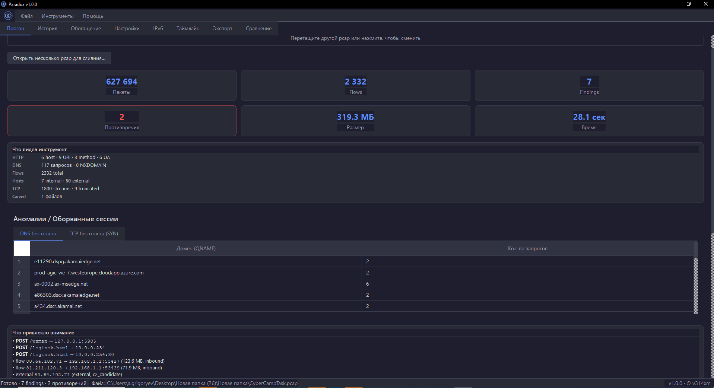
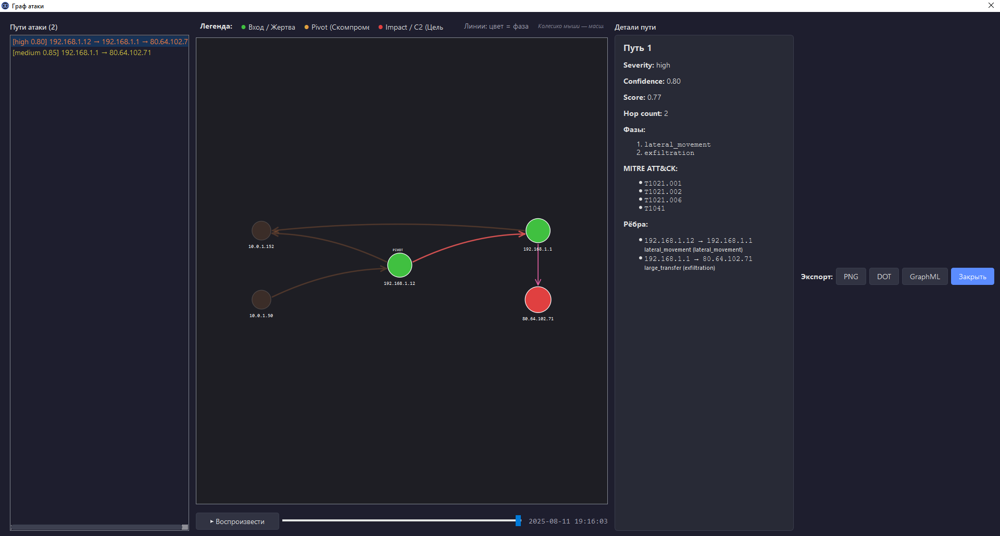
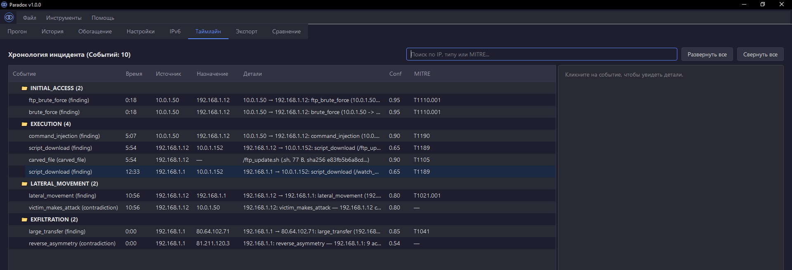

Paradox — оффлайн-инструмент для триажа трафика. Ищет противоречия между слоями данных: DNS vs SNI, JA3 vs User-Agent, MAC vs IP. Показывает пивоты, ARP-spoof, domain-fronting и C2-каналы — а не просто список findings.
$ pip install -e ".[gui]"
$ paradox capture.pcap
# CLI → JSON + Markdown + IOC
$ python -m paradox_gui
# GUI: 8 вкладок, граф связей, таймлайн
# Пример вывода:
packets: 627 694 · unique DNS queries: 117
flows: 2 332 · findings: 7 · contradictions: 2
PIVOT: 192.168.1.12 (жертва brute_force, но атакует 192.168.1.1 через WinRM)
Zeek, Arkime и tshark парсят pcap и находят DNS, TLS, HTTP. Paradox идёт дальше — проверяет согласованность между слоями и строит атомарные факты о мире.
SNI без DNS, MAC на разных IP, JA3 инструмента с браузерным User-Agent. 12 правил, которые находят то, что не сходится.
Хост одновременно жертва и атакующий — victim_makes_attack. Сразу видно, как злоумышленник перемещается по сети.
Реконструкция атаки по фазам: recon → initial_access → execution → lateral_movement → c2 → exfiltration.
Периодические heartbeat-соединения с jitter < 0.1, ≥ 20 обращений, ≥ 10 минут. Multi-tenant filter против CDN.
Сканирование вырезанных файлов пользовательскими YARA-правилами. Metadata-only — тело на диск не пишется.
Два JSON-отчёта → что добавилось / исчезло / изменилось. Для повторного триажа одного и того же pcap.
Нажмите на вкладки ниже, чтобы посмотреть, как выглядит работа с инструментом.
| Тип | Значение | MITRE | Severity |
|---|---|---|---|
| FTP brute force | 10.0.1.50 → 192.168.1.12:21 | T1110.001 | critical |
| Command injection | 10.0.1.50 → 192.168.1.12:80 | T1190 | high |
| Lateral movement | 192.168.1.12 → 192.168.1.1:5985 | T1021.001 | high |
ftp_brute_force (10.0.1.50 → 192.168.1.12)
command_injection (10.0.1.50 → 192.168.1.12)
victim_makes_attack: 192.168.1.12 → 192.168.1.1
От сырых пакетов до готового графа атаки и таймлайна. Весь инцидент на одном экране.

Мгновенная статистика по пакетам, flows и findings. Вкладка «Что видел инструмент» показывает разбивку по протоколам, а блок «Аномалии» сразу подсвечивает DNS без ответа и оборванные TCP-сессии.

Визуализация связей между хостами. Сразу видно цепочку компрометации (Victim → Pivot → C2). Панель справа показывает фазы, MITRE ATT&CK и детали каждого ребра.

Хронология инцидента, разбитая по фазам атаки: от Initial Access до Exfiltration. Удобная таблица с временем, источником, получателем и MITRE-техниками.
Paradox строит атомарные факты о мире и ищет несогласованности. Это новый слой анализа — поверх findings и поверх entities.
…и ещё 7 правил, включая reverse_asymmetry, sni_without_dns и dns_answer_mismatch.
## TL;DR
PIVOT: 192.168.1.12 (жертва brute_force, но сама атакует 192.168.1.1 через WinRM)
Payload: /ftp_update.sh (sh, 77 B, sha256 e83fb5b6a8cd…)
## Timeline
initial_access → execution → lateral_movement → exfiltration
## Contradictions (2)
critical victim_makes_attack
192.168.1.12 — одновременно victim_of 10.0.1.50 и attacker_of 192.168.1.1
high reverse_asymmetry
192.168.1.1: 9 acks vs 5000+ inbound bytes
Собственный парсер на struct.unpack — 39× ускорение против чистого scapy.
| Размер | Пакетов | Время | Контекст |
|---|---|---|---|
| 152 МБ | 232k | 12 сек | с TCP reassembly |
| 319 МБ | 627k | 28 сек | CTF CyberCampTask |
| 4.7 ГБ | 9.5M | 10 мин | FIRST-2015 · 58 pcap |
Python 3.11+. Windows / Linux / macOS. Готовый .exe — в Releases.
# Разработка с GUI
pip install -e ".[dev,gui]"
pip install -e ".[dev,gui,yara,enrich]"
# + YARA + Threat Intel